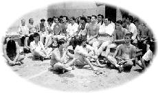

| Panorama d'événements |
|  |
Détenus méditants avec une sincérité totale |
Á un séminaire vidéo mis en place avec l'aide des autorités de la prison et des détenus, des participants ont trouvé une mine d'inspiration dans les mots de Maître. Pendant la session des questions-réponses qui a suivi, les détenus se sont hautement développés spirituellement et ont intérieurement concentré leurs questions.